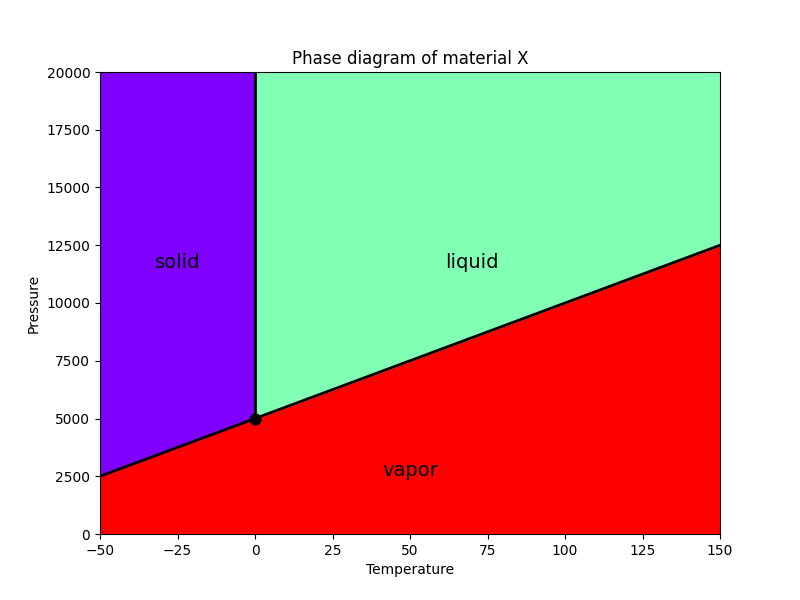
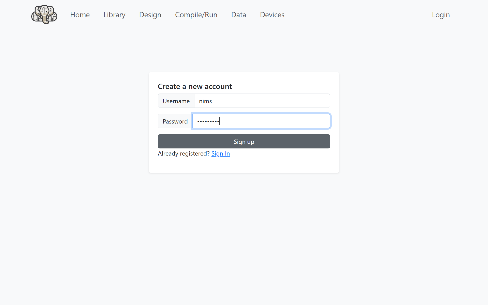
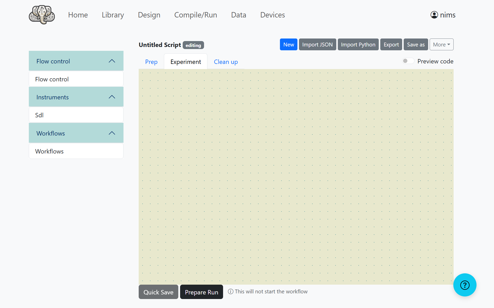
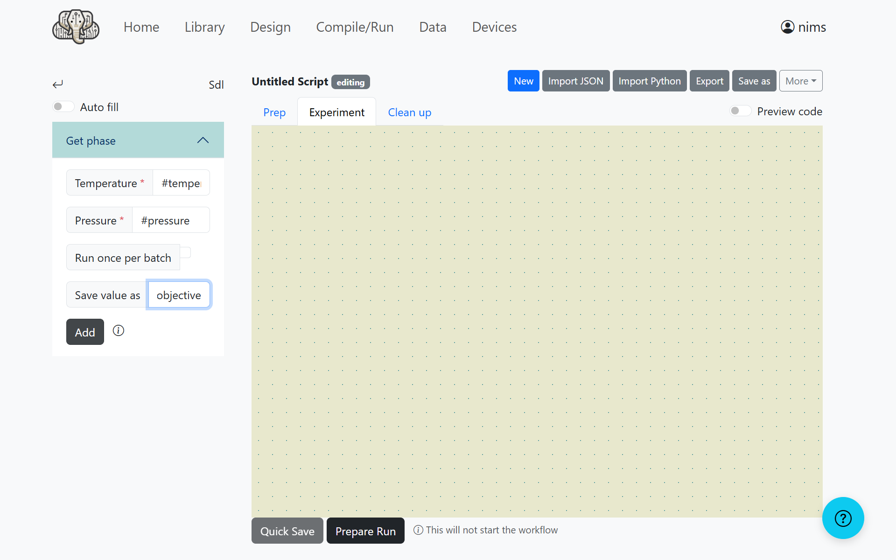
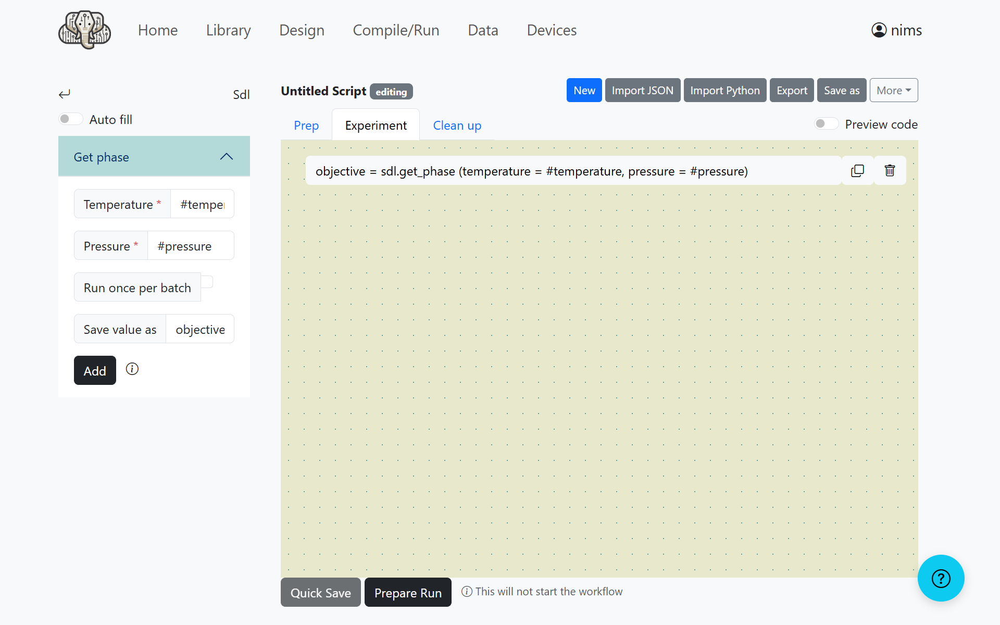
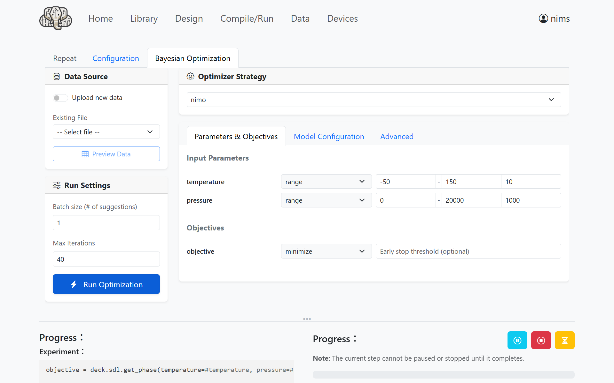
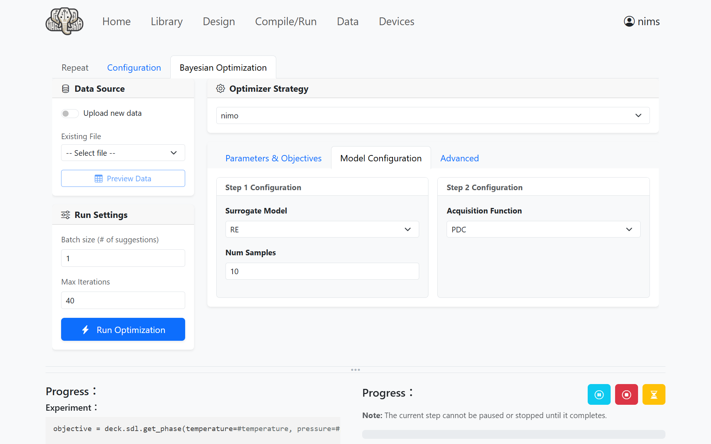
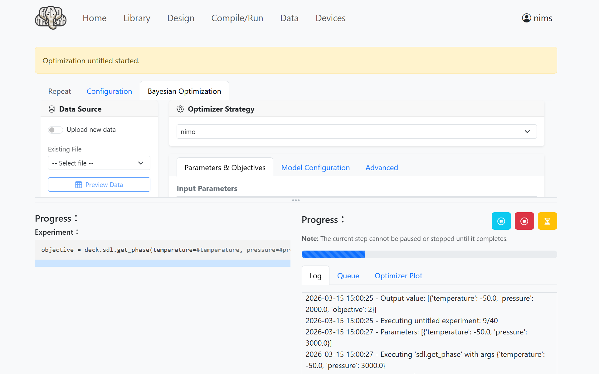
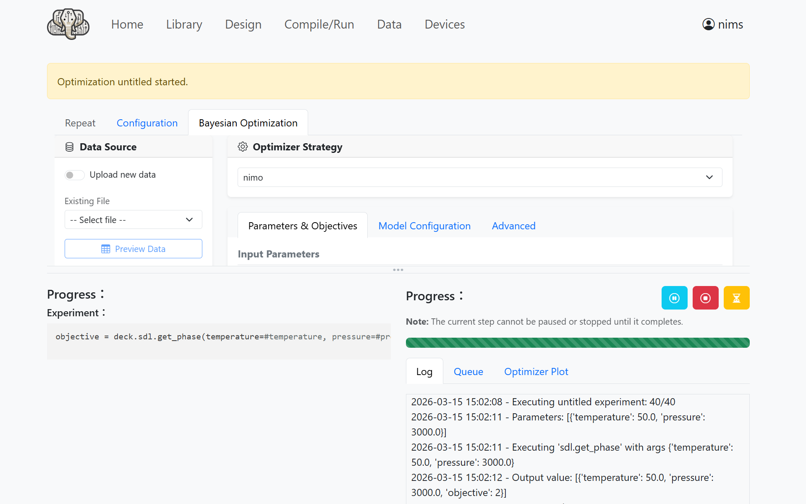
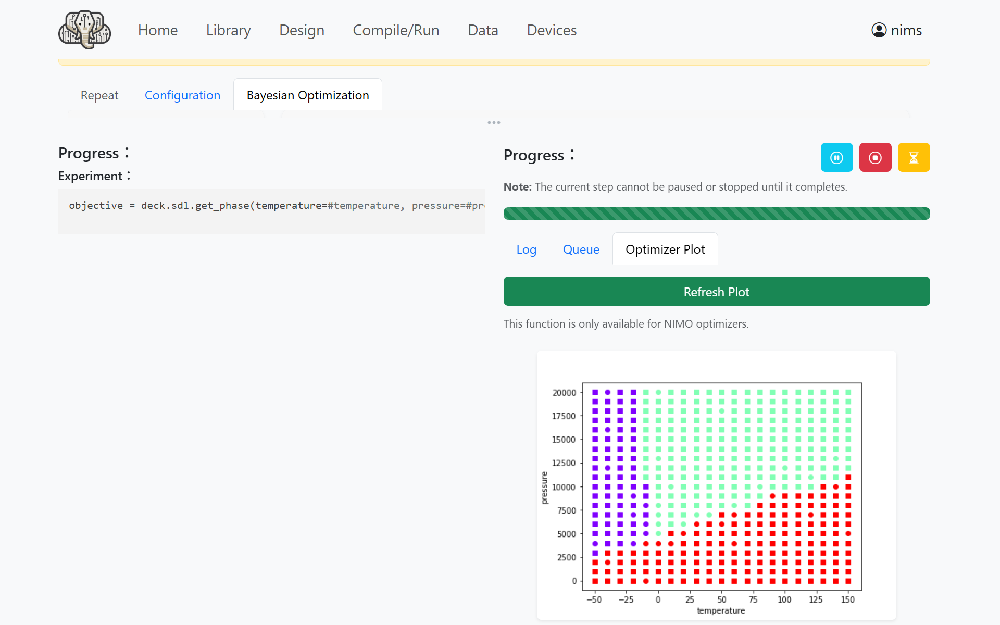

IvoryOS Interface
This page describes how to use NIMO with the IvoryOS interface, using the creation of a phase diagram for material X as an example.
Material X has the following phase diagram:
The region below the line passing through the triple point (0 °C, 5000 Pa) is gas
Above the line, the region below 0 °C is solid and the region at 0 °C or above is liquid
{kind=link}

Installation
An additional installation is required to use IvoryOS.
pip install ivoryos
This has been verified with NIMO v2.1.2 and IvoryOS v1.5.13.
Launching the Interface
Open your editor, enter the following Python program, and save it as main.py.
import ivoryos
# Definition of the SDL class
class SampleSDL:
def __init__(self):
# Phase diagram parameters
self.t_triple = 0
self.p_triple = 5000
self.slope = 50
def get_phase(self, temperature: float, pressure: float) -> int:
"""
Returns the phase corresponding to the given temperature and pressure.
0: solid, 1: liquid, 2: gas
"""
boundary = self.slope * (temperature - self.t_triple) + self.p_triple
if pressure < boundary:
return 2
else:
if temperature < self.t_triple:
return 0
else:
return 1
if __name__ == "__main__":
# Create an instance of the SDL class
sdl = SampleSDL()
# Launch the IvoryOS interface
ivoryos.run(__name__, port=8888)
Run the saved Python program to launch the IvoryOS interface.
python main.py
Designing a Workflow
While the program is running, open a web browser and access http://127.0.0.1:8888/. The following login screen will appear.

Click Create a new account and set your username and password.
{kind=link}

Enter the username and password you set to log in.

After logging in, the following menu screen will open.

Click Edit designs in the upper right to open the workflow editing screen.
{kind=link}

Click Sdl under Instruments and enter the following values.
Temperature:
#temperaturePressure:
#pressureRun once per batch: unchecked
Save value as:
objective
{kind=link}

Click the Add button to add the block.
{kind=link}

By combining blocks in this way, you can design your workflow.
Running the Experiment Plan
When you have finished designing the workflow, click the Prepare Run button to open the experiment plan settings screen.
Configure the values as follows.
Optimizer Strategy:
nimotemperature:
-50(Min),150(Max),10(Step)pressure:
0(Min),20000(Max),1000(Step)Max Iterations:
40
No other settings need to be changed.
{kind=link}

Next, open Model Configuration and configure it as follows.
Surrogate Model:
RENum Samples:
10Acquisition Function:
PDC
With this configuration, the first 10 iterations use random search, followed by exploration using the PDC algorithm.
{kind=link}

Running the Experiment
Click the Run Optimization button to start the experiment with NIMO.
{kind=link}

After a short wait, the experiment will complete.
{kind=link}

Open Optimizer Plot and click Refresh Plot to display the generated phase diagram.
{kind=link}

Note
The displayed phase diagram may differ depending on the results of the random search.
(Advanced) Uploading Preliminary Experimental Results
If you already have preliminary experimental results, you can enable Upload new data under Data Source in the upper left of the experiment plan settings screen and upload a CSV file containing those results.
The column names in the CSV must match the variable names entered in the workflow design screen.
temperature,pressure,objective
-50,0,2
-50,20000,0
150,20000,1
Known Issues
IvoryOS may crash if you run a second experiment and display the phase diagram on a screen where an experiment has already been performed. Restarting IvoryOS appears to resolve the issue, but the cause is still under investigation.